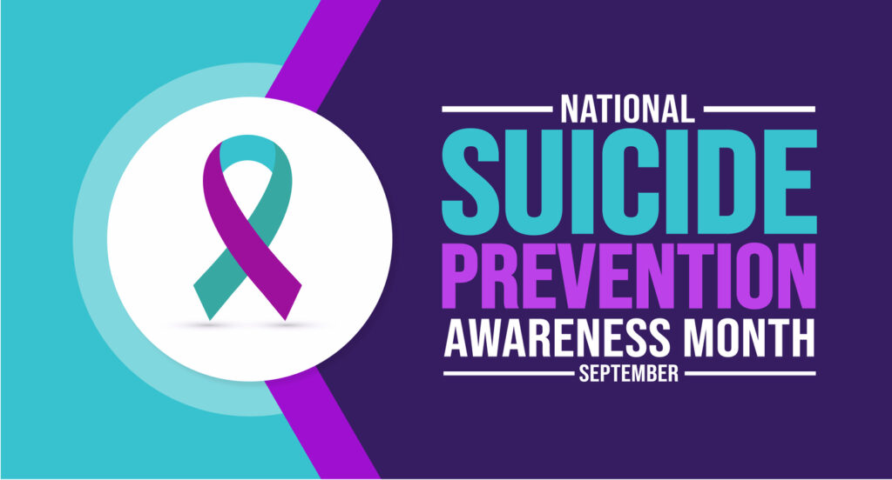

Suicide rates increased approximately 36% between 2000–2022. Someone died from suicide every 11 minutes and it was the second leading cause of death for people ages 10-14 and 20-34. However, there are risks and warning signs, as well as things everyone can do to support suicide prevention. September is Suicide Prevention Month, which is a nationwide effort to raise awareness, share resources, and discuss this highly stigmatized topic.
When Experiencing a Crisis, Trained Help is a Phone Call or Mouse Click Away
If you or someone close is experiencing a mental health crisis, call 988 to contact the 988 Suicide and Crisis Lifeline. This free, confidential network of local crisis workers who take calls, text, or chat with people in emotional crisis 24/7 across the United States. Additionally, visit 988lifeline.org online to find information and resources on suicide and crisis prevention.
Only call 911 when danger to others or self-harm seems imminent. 988 is staffed by skilled, trained mental health workers. Law enforcement officers in most areas are not trained to respond to people in a mental health crisis. This has resulted in the deaths of people suffering from mental illness by police.
If you’re in crisis but don’t feel you’re ready to talk about it, please text “HOME” to 741741. Sometimes when we’re unable to discuss how we’re feeling, we’re able to text.
Suicide Prevention – It Takes a Village
Normalize Discussions Around Mental Health
Being connected to family and community support can decrease suicidal thoughts and behaviors. If you or someone you care about is suffering from a mental health problem, it’s helpful to talk to others about these issues. Talking to a child, dependent, or person you care for about their mental health can be difficult. However, it’s important to normalize these discussions to remove stigma and empower them to seek help.
SAMHSA (Substance Abuse and Mental Health Services Administration) provides a resource page, How to Talk About Mental Illness, where you can find helpful information for the whole village: those suffering, family, caregivers, and educators, as well as community and faith leaders.
Anyone Could Be Struggling
It’s important to check in on others – even those who appear to have it all. Just because someone looks like they have it together on the outside doesn’t mean they’re not suffering in silence. They may appear strong, happy, and even smile but feel pressured, hopeless, or alone. Ask them how they’re feeling. Volunteer a piece of information about yourself they can relate to. Listen emphatically and validate their emotional experience. Ask if you can help.
Take Time for Self-Care
Don’t forget self-care to avoid burnout. Taking care of others can be stressful. Therefore, it’s vital to preserve your own physical, mental, and emotional well-being. This involves activities and behaviors that promote wellness, relaxation, and overall personal development. This could include engaging in a hobby, working out, getting your hair done, getting enough sleep, or just taking time to meditate.
What to Do If Someone is in a Mental Health Crisis
If someone you care about is in a crisis, show empathy, support, patience, and concern. Listen to them and let them express themselves without judging, debating, or arguing.
- Ask them if they are thinking about hurting or killing themselves.
- Don’t leave them alone. Stay with the person or make sure the person is in a private, secure place with another caring person until you can get further help.
- Remove any objects that could be used in a suicide attempt.
- Click, call, or text 988 to reach the 988 Suicide & Crisis Lifeline to talk to trained crisis workers. Follow their guidance.
Suicide Warning Signs and Risk Factors
Although no one is immune to thoughts of suicide, there are warning signs that someone may be in danger of suicide. If the behavior is new, has increased, or could be related to a painful event, loss, or change, you should seek help by calling the 988 Lifeline. Some of these behaviors can include:
- Talking about or posting online about killing themselves or wanting to die
- Researching suicide methods online, making plans for suicide, or buying a gun
- Increasing the use of alcohol or drugs
- Isolating and withdrawing from others
- Sleeping too much or too little
- Expressing hopelessness, feeling trapped, or having no reason to live
- Talking about being a burden to others
- Expressing unbearable pain and/or distress
- Acting anxious, agitated, impulsive, or reckless
- Exhibiting extreme mood swings or showing rage
Certain risk factors increase the odds of someone following through on thoughts of suicide.
- Access to firearms
- Alcohol and substance use
- Bullying and/or discrimination
- Chronic pain or serious illness
- Family history of suicide or previous suicide attempts
- High-conflict or violent relationships
- History of abuse or trauma
- Housing insecurity
- Job loss or financial problems
- Lack of healthcare access and/or coverage
- Loss of relationships
- Prolonged stress
- Recent tragedy or loss
- Social isolation
- Stigma associated with mental illness and seeking help
- Suicide cluster in the community
- Untreated mental health condition
Where to Get Help
Help Within Your Healthcare Network
If you’re struggling with depression, consult with your primary care physician. Your doctor may be able to rule out possible contributing factors such as vitamin deficiencies, hormonal imbalances, or other health problems that could contribute to depression. Your primary provider can also give you a referral to a mental health specialist.
If insured, check with your insurance company to see if the specialist you have been referred to is in-network. Just call the phone number on the back of your insurance card.
Whether you have insurance or not, mental health services are shoppable, and you can get pricing and out-of-pocket cost estimates before you get care.
National Mental Health Resources
If you or someone you know is struggling with their mental health, help is available.
- If experiencing a mental health crisis, call or text 988 or chat 988lifeline.org. It’s available 24/7.
- If you feel you might be in crisis but aren’t ready to talk about it, text the word “HOME” to 741-741 to reach the Crisis Text Line.
- Contact 211 (211.org) to speak to someone and find local long-term mental health resources.
- Open Path Psychotherapy Collective (openpathcollective.org) is a national nonprofit collective providing affordable therapy (less than market rates) without the need for insurance.
- For the Veterans Crisis Line, call 1-800-273-TALK (8255) and press 1; or text 838-255
- Child Mind Institute (childmind.org) features learning resources for kids and teens, as well as videos on coping skills.
- Ourmindsmatter.org is a nonprofit that helps teens start their own suicide prevention clubs in schools.
- LGBTQ Youth can reach The Trevor Lifeline at 1-866-488-7386.
- The Trans Lifeline can be reached at 1-877-565-8860.
- To learn how to get support for mental health, drug, and alcohol issues, visit FindSupport.gov.
- To locate treatment facilities or providers, visit FindTreatment.gov or call SAMHSA’s National Helpline at 800-662-HELP (4357).
- Connect with advocacy and more resources at NAMI.org or call the NAMI HelpLine at 1-800-950-NAMI (6264) or text “HELPLINE” to 62640, Mon-Fri from 10 a.m. to 10 p.m.
- Go to NAMI at nami.org/findsupport to connect with more than 600 state organizations and resources across the country.
Want to Learn More?
Check out Crush Medical Debt on YouTube, Do You Think You or Someone You Know Might Be in Crisis? Listen to This… This show is from the podcast What Your Psychologist Wants You to Know about Suicide Prevention.
Dr. Virgie interviews personal finance and mental health advocate Melanie Lockert in Debt & Depression – How to Not Let It Happen to You. Melanie Lockert is an award-winning personal finance writer, and author of the book, Dear Debt, which chronicles her own journey of overcoming crippling debt while giving you concrete tools to do the same.
Takeaways
- Normalize the discussion around mental health issues and help remove the stigma around the topic.
- Take time for self-care.
- If experiencing a mental health crisis, call or text 988 or chat 988lifeline.org. It’s available 24/7.
- If experiencing depression, consult with your primary care provider to rule out possible contributing health problems; and if needed, get a referral to a specialist.
- If you have insurance, call the number on the back of your insurance card to verify the mental health specialist you have been referred to is in-network.
- Whether you have insurance or not, mental health services are shoppable, and you can get pricing and out-of-pocket cost estimates before you get care.
- Mental health resources are available from state, federal, local, and private non-profit organizations.
#SuicidePrevention
#MentalHealth
#EndTheStigma
#RecoveryIsPossible